おいしい晩ごはん。献立は数秒で。
買い物リストも、自動で。
まずは7日間、無料でお試し
App Storeからダウンロードダウンロード無料・App内課金あり

Appleのおすすめに選出 · App Storeで★ 4.2
iPadOSの
ベストApp
いま注目のApp
お気に入りの
インディーApp
ダウンロード無料・App内課金あり
Appleのおすすめに選出 · App Storeで★ 4.2
iPadOSの
ベストApp
いま注目のApp
お気に入りの
インディーApp
献立を選んでアレンジしても、一から作ってもOK。時間とお金を節約して、もっとヘルシーな食生活を。
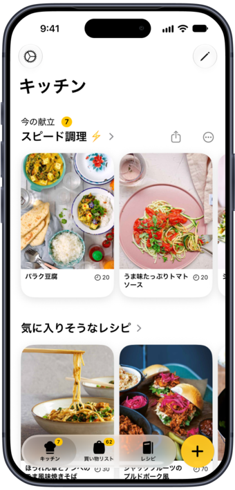
WebのレシピやInstagram・TikTokの料理動画を、本格的なレシピに変換。自分のレシピを追加したり、Plantryのレシピをアレンジしたりもできます。
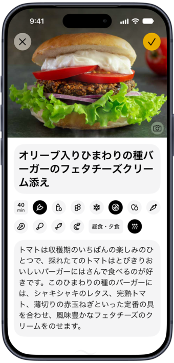
必要な材料を自動でまとめて、売り場ごとに整理。材料ひとつひとつにイラストがつきます。
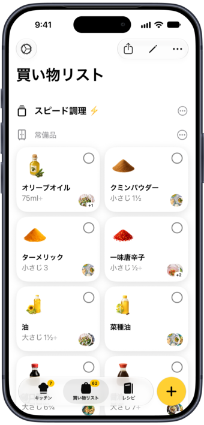
テーマに沿って組まれた1週間の献立から選んで、気分に合わせて料理を入れ替えられます。
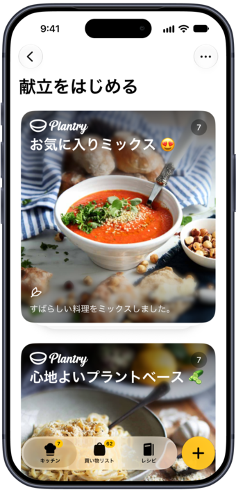
すてきなシェフたちによる、1,200以上のおいしいレシピがそろっています。
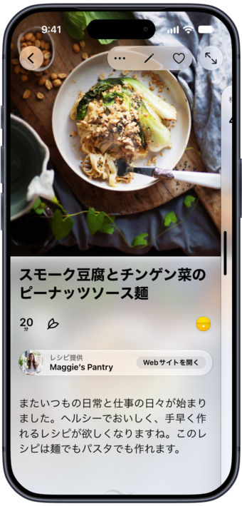
家にある食材を入力するか、冷蔵庫を撮影するだけ。たくさん使えるレシピから順に表示します。
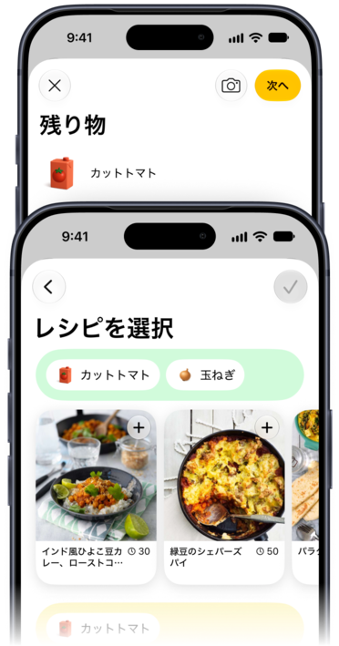
献立や買い物リストを、ロック画面やホーム画面に。ワンタップで、料理も買い物もすぐに始められます。
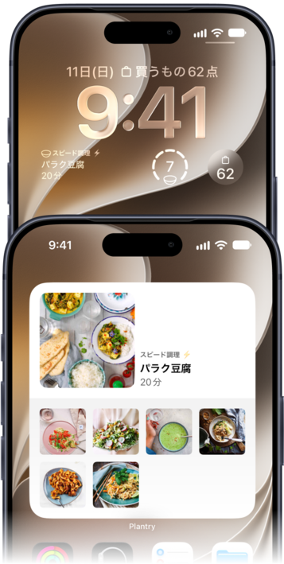
どのレシピからでも、複数のタイマーを直接スタート。手順の時間をタップするか、好きな時間を設定するだけです。
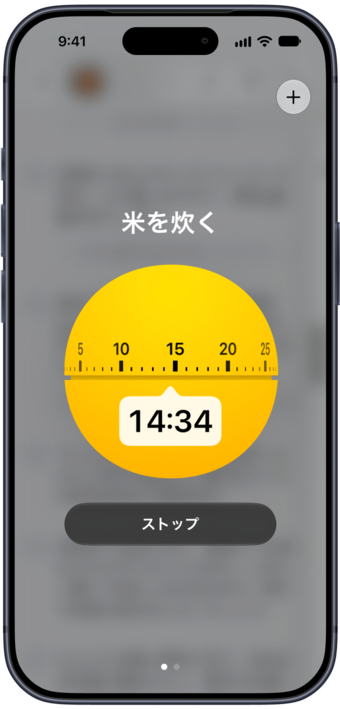
テーマカラーを選んで、材料の並べ方を決めて。レシピごとに、写真から色を取り入れることもできます。
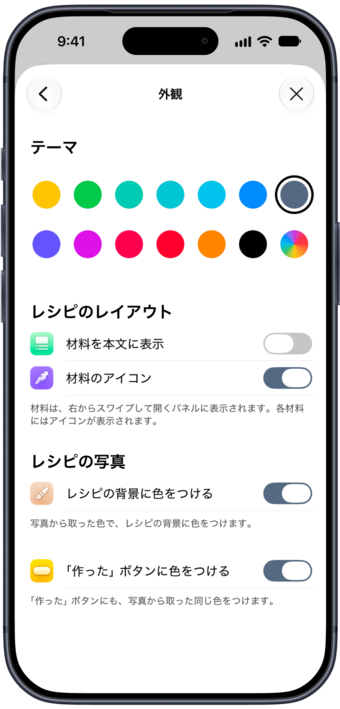
開くと大きなディスプレイいっぱいに。 レシピを開いたまま折りたたむと、調理モードに切り替わります。
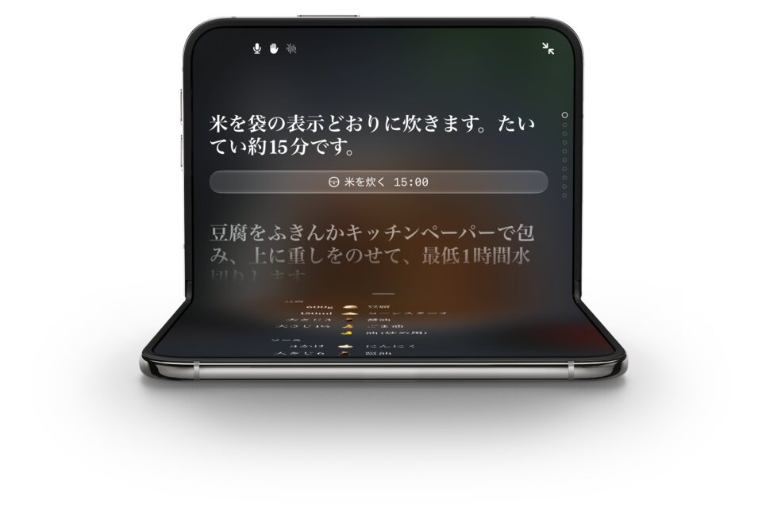

忙しい日でもおいしく食べられる、家族の毎日にぴったりのレシピです。

植物性の食材でちょうどいい食感と最高の味を引き出すコツを、Gustavが教えてくれます。

おいしい抗炎症レシピで、小さくても人生を変える一歩を。

旬の食材が主役の、植物性の料理。

手軽に作れて、植物性で、家族みんなが喜ぶおいしい料理！

シリア、レバノン、ハンガリーから着想を得て、Selinaがわくわくする植物性レシピを生み出します。

自分の菜園で育てた野菜や、森で摘んだ恵みを使って、Linnéaは季節に寄り添った料理を楽しんでいます。
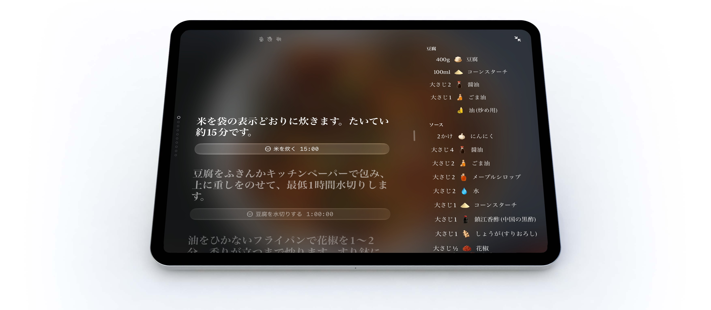
iPadOSの
ベストApp
いま注目のApp
新しいレシピに
挑戦
必携のApp
あなたも
料理上手に！
サステナブルな
暮らしのApp
免疫力を
高めよう
お気に入りの
インディーApp
おいしいごはんに
役立つApp
今週のお気に入り
新しい定番レシピを
見つけよう
とても丁寧に作られたアプリ！隅々まで作り手のこだわりが感じられる、そんなアプリのひとつです。料理や献立づくりが好きなら、Plantryを取り入れて毎日をちょっと豊かにしてみてください。この体験の質を考えれば、サブスクの料金は安いものです。
料理はおいしく、献立づくりも楽に。Plantryを使い始めて1か月以上になりますが、これからも使い続けます。1週間の献立づくりと、それに合わせた買い物リストが本当に便利で使いやすいです。レシピもおいしくてわかりやすく、料理は最高です。
ヘルシーな食事が手軽に！このアプリ、大好きです！忙しいとレシピを調べる時間がなくて、健康的な食事を続けるのは本当に難しいもの。このアプリがその答えでした！[…] 仕事帰りに、新しくておいしいヘルシーな晩ごはんを作るのが楽しみになりました！
すばらしいアプリ、最高の料理。これまでに6品作りましたが、どれも風味豊かで本当においしいです。アプリ自体もとてもきれいで、見やすくまとまっています。
生活をラクにするヴィーガンアプリ5選
Plantryは、レシピに必要なものをすべて買い物リストにしてくれます。さらに、レシピごとの栄養価や内蔵タイマーなども！すでにお気に入りです！

手軽でエシカルな作り置き
倫理、環境、健康、どれを大切にしている人にも。Plantryは、ヴィーガンやベジタリアンの食生活に必要なすべてをサポートします。
Plantryは、iPhoneとiPadで使える献立・買い物リストアプリ。毎晩の「今日の晩ごはん、何にしよう？」から解放されます。用意された1週間の献立を選んでアレンジしても、一から自分で組み立ててもOK。買い物リストはPlantryが数秒で作ってくれます。献立を立てている間も、すでに選んだ料理に合うレシピを提案します。
私たちが公開するレシピはすべて植物性。シェフたちが考えた1,200以上のベジタリアン・ヴィーガンの晩ごはんが、平日にさっと作れる料理から週末のごちそうまでそろっています。Webで見つけたレシピも同じコレクションに保存でき、今週の献立と買い物リストはウィジェットでロック画面やホーム画面に。どのレシピにもタイマーが組み込まれています。
冷蔵庫に使い切りたい食材がたくさん？家にあるものを入力するか、冷蔵庫を何枚か撮影すれば、新しい残り物機能が、たくさん使えるレシピから順に並べてくれます。買い物リストは、実際にお店を回る順番どおりに売り場ごとに並び、材料ひとつひとつにイラストアイコンがつきます。レシピや献立と同じように、きれいに印刷することもできます。
Plantryのダウンロードは無料で、新規メンバーは誰でも7日間の無料トライアルを利用できます。その後は、App内のサブスクリプションですべての献立とレシピが使えるようになります。現在の価格は申し込む前に必ずアプリ内に表示され、いつでも解約できます。
Plantryに収録されているレシピは植物性で、毎日こうした料理を作っているシェフたちによる、ヴィーガンとベジタリアンの料理がそろっています。ただし、Plantry自体はそれだけに限りません。Webのレシピを保存したり自分のレシピを書いたりして、ベジタリアンと同じように、魚、肉、鶏肉、魚介類にも簡単に分類できます。どれも同じ料理ブック、同じ献立、同じ買い物リストに入ります。
はい。「設定」の「食事の好み」で、アプリ全体をヴィーガン、グルテンフリー、またはその両方に絞り込めます。検索、献立、おすすめのすべてがその設定に従います。
はい。Plantryは、自分だけのデジタル料理ブックにもなります。どんなWebサイトからでもレシピを保存したり、家族の定番料理を一から追加したり、Plantryのレシピを自分の作り方に合わせてアレンジしたり。集めたレシピはすべて「マイ料理ブック」に入り、名前や説明、画像を自由にカスタマイズできます。そこにあるレシピはどれも、来週の献立にすぐ加えられます。
はい。料理のリールやTikTokをPlantryに共有すると、動画を取り込み、キャプションを読み取って完全なレシピにします。キャプションに手順がないときは、動画から手順を書き起こします。保存したレシピのいちばん上で動画が再生されるので、見ながら料理できます。
1週間の献立を立てると、必要な材料をPlantryが自動でひとつの買い物リストにまとめるので、一度の買い物で1週間分がそろいます。アイテムは自動で売り場ごとに並び、その売り場は、いつもお店を回る順番にドラッグで並べ替えられます。材料にはそれぞれ手描きのイラストがつくので、カートを押しながらでもリストをさっと確認できます。よく買うものを覚えてくれる候補を使って、自分のアイテムを追加・編集することもできます。
はい、それこそが残り物機能の役目です。家にあるものを入力するか、冷蔵庫を何枚か撮影すると、Plantryがたくさん使えるレシピから順に並べます。気に入ったものを選べば、そのまま献立に追加されます。
はい。ハンズフリー対応のフルスクリーン調理モードが手順をひとつずつ読み上げ、音声コマンドで操作できるので、汚れた指で画面に触れる必要はありません。ハンドジェスチャーにも対応しています。音声コマンドは英語、スウェーデン語、ドイツ語で使え、アプリが日本語のときは英語で聞き取ります。ほかの表示は日本語のまま、「next」や「start timer」と声に出して操作します。
家族の人数分を一度設定すれば、すべてのレシピがそれに合わせて調整され、買い物リストの分量も変わります。お客さんが来るときは？個別のレシピで別の人数分を設定しても、いつもの設定はそのままです。
はい。レシピ1品、1週間分の献立、買い物リストを、それぞれ画面をそのまま出力するのではなく、紙に合わせたレイアウトで印刷できます。
Plantryには献立用と買い物リスト用のウィジェットがあり、ロック画面とホーム画面の両方に置けます。今夜のレシピや今週の進み具合をいつでも表示したり、リストそのものを置いて、お店でひと目で確認できるようにしたり。iOS 27では、どちらも新しい特大サイズに対応し、一度にもっと多くの情報を表示できます。
はい。PlantryはiPhoneとiPadの両方のために作られていて、AppleからiPadOSのベストAppのひとつとして紹介されています。
Plantryは、日本語、英語、スウェーデン語、ドイツ語、ノルウェー語、デンマーク語、オランダ語、フランス語、スペイン語、フィンランド語、アイスランド語に完全対応しています。レシピも買い物リストも、すべて選んだ言語で表示されます。言語は「設定」からいつでも切り替えられます。Read more in English → Läs mer på svenska →
PlantryはiPhoneとiPad向けのアプリです。現在、Android版はありません。
hello@filibaba.comまでメールするか、アプリで「設定」→「メールで問い合わせ」→「フィードバックを送信」をタップしてください。いただいたメッセージにはすべて目を通しています。